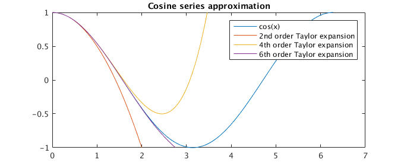
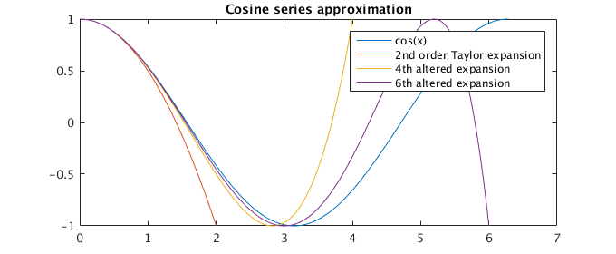
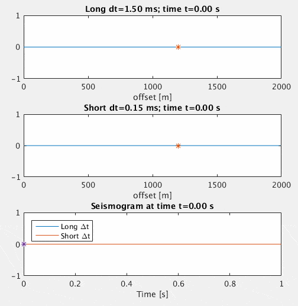
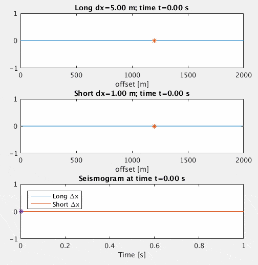
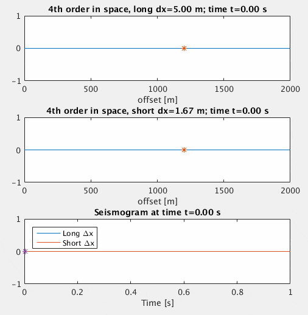
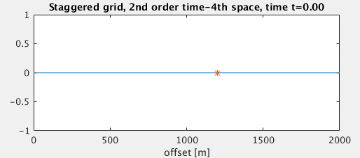
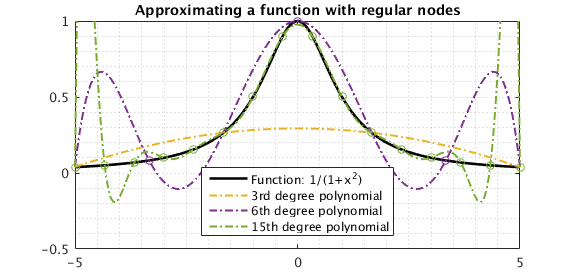
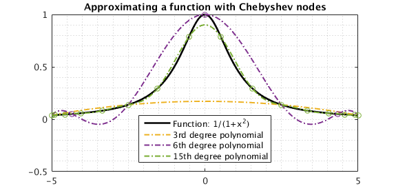
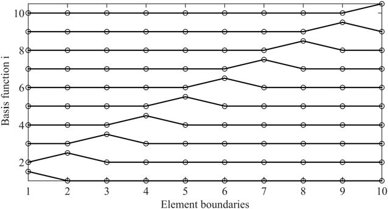

Introduction
Welcome to my homepage. I am Erik Koene, a PhD student on modelling seismic wave propagation. Through the course of my PhD I will implement many seismic wave methods and I would like to share these online. Ordering the information is valuable for me, and may provide help for anyone else.
We will focus particularly on the modelling of the 1D acoustic wave equation.
Acoustic wave equation
Formulations
First order system of equations
Deriving the wave equation classically starts with defining two equations relating a wave quantity (e.g. pressure \(p\)) to a known medium response (e.g. the change of the particle velocity \(\vec{v}\)). This step generally involves simplifications and linearization of processes which are not necessarily so simple in reality! For the common acoustic wave equation we are left with two equations, furthermore depending on density (\(\rho\)), acoustic velocity (\(c\)), and source terms (\(q\) and \(\vec{f}\)), depending on the gradient \(\nabla\) of location (\(\vec{x}\)) and derivative of time (\(t\)):
$$ \begin{bmatrix} p \\ \vec{v} \end{bmatrix}_t = \begin{bmatrix} -c^2\rho\left(\nabla\cdot \vec{v}+q\right) \\ -\frac{1}{\rho}\left(\nabla p - \vec{f}\right) \end{bmatrix} . $$
This is generally known as the first order system of partial differential equations that make up the wave equation.
Second-order PDE
One can always rewrite a first order system of PDE's into a single second-order PDE by eliminating one of the quantities, i.e. we may eliminate the particle velocity \(v\), and assume the compressibility \(K=c^2\rho\) is independent of time, to find:
$$
\nabla\cdot\left[\frac{1}{\rho}\nabla p\right] - \frac{1}{c^2\rho}p_{tt} = s^{(d)} + s^{(m)}.
$$
This is generally known as the second-order partial differential equation that makes up the wave equation. The source terms have been renamed to a dipole (\(s^{(d)}\)) and monopole (\(s^{(d)}\)) source -- one source term spreads evenly in all directions, the other is positive in one direction and negative in the other.
Scalar wave equation
For simple examples, one may choose to assume that density \(\rho\) is constant, thus the term \(\nabla\frac{1}{\rho}=0\). One can then write:
$$
\nabla^2 p - \frac{1}{c^2} p_{tt} = S^{(d)} + S^{(m)}.
$$
This is generally known as the scalar wave equation. The source functions have been multiplied with density.
Note again that this is a simplified description of wave equation physics as if a Newtonion viscous fluid. None of these formulations takes into account frequency-dependent attenuation, elastic effects and other non-linear, non-Newtonian physics.
Expected Green's function solutions
It is important to know what solutions to the wave equation look like. One can find solutions to the homogeneous scalar wave equation by setting the source terms to \(-\delta(t)\), i.e. a negative impulse function:
$$
\left(\nabla^2 - \frac{1}{c^2}\frac{\partial^2}{\partial t^2} \right)p(x,t) = -\delta(t).
$$
Correspondingly, one can find the pressure solution \(p(x,t)\) that produces the negative impulse function. As the spatial gradient \(\nabla\) is different for different dimensions, so does the pressure solution change as well. These solutions are known as the Green's function solutions. One can compute the solution for a different source wavelet by taking the convolution product between the Green's function solution \(G\) and the source wavelet \(S\). The Green's functions for different dimensions, dependent on the Euclidian (Pythagoras) distance between source and receiver \(r=|\vec{x}_{\text{source}}-\vec{x}_\text{receiver}|\):
$$
\begin{bmatrix}G_{1D} \\ G_{2D} \\ G_{3D} \end{bmatrix} = \begin{bmatrix} \frac{c}{2}H(t-\frac{r}{c}) \\
\frac{H(t-\frac{r}{c})}{2\pi (t^2-\frac{r^2}{c^2})^{1/2}}\\
\frac{1}{4\pi r}\delta(t-\frac{r}{c}) \end{bmatrix},
$$
where function \(H\) is the step-function, i.e. 0 for a negative argument, 1 for a positive argument, \(\frac{1}{2}\) for a zero argument.
The solution for an arbitrary source wavelet \(S\) is found by convolution with the Green's function. The convolution with the delta function, as in the 3D case, simply returns the wavelet \(S\) but decayed in amplitude as we move away from the source. The convolution with the step function, as in the 1D case, returns the integrated wavelet \(\int S\,\text{d}t\) without any form of decay. The 2D case is the odd one out, achieving something akin to 'half an integration'.
The important realisation is that we do not necessarily expect to observe the injected wavelet \(S\) in the domain if we work in 1D or 2D! In 1D, we may choose to inject the derivative of our source \(\frac{\partial S}{\partial t}\) to observe \(S\) propagating within the domain and e.g. record it as such on a synthetic seismogram! For 2D I have not encountered an effective way to shape the wavelet before injection, though 45° filters (constant phase shift with \(e^{-i\pi/4}\) in the frequency domain) and half-derivative filters (applying half a derivative in the frequency domain) may provide part of the answer, but still require a substantial amount of noodling before an effective shaping is achieved. The best results, I obtained using deconvolution of the wavelet using the 2D Green's function solution in the frequency domain, i.e. dividing by the modified bessel function of the second kind with frequency (\(K_0(i\omega)\)). In industry, people also use matched filters, i.e. model using any wavelet, record the wavelet somewhere and compare it to its desired shape (for example, a Ricker wavelet) at that point, and use this to find an appropriate frequency filter and correspondingly the appropriate input wavelet. Additionally, take note that 2D and 3D wave propagation have significant differences between near-field source signature and far-field signature, the two components dropping off in amplitude at different distances to the source. This is usually expressed in requiring to be 1 to 4 wavelengths away from the source.
Download MATLAB: FTDT_2D_shaping.m: Different pre-shaping of the 2D input wavelet
Second-order finite-difference in time
The finite-difference technique replaces derivatives in the wave equation with finite-difference approximations of limited accuracy. We will first study the effect of taking a second-order finite-difference approximation of the temporal derivative, i.e. that in time. We will demonstrate this step of second-order finite-difference accuracy for both the second-order and first-order PDE of the wave equation, followed by a description of higher-order solutions as well.
Second-order scalar wave equation
We reformulate the scalar wave equation with only time derivatives on the left side:
$$
\frac{\partial^2 p(x,t)}{\partial t^2} = c(x)^2\nabla^2 p(x,t) + S(t),
$$
where \(S(t)\) is the source function, implicitly multiplied by density and velocity squared!
We take a second-order finite difference approximation to replace the terms on the left hand side with finite-differences:
$$
\frac{\partial^2 p}{\partial t^2} \approx \frac{p({t-\Delta t})-2p({t}) + p({t+\Delta t})}{\Delta t^2} = \sum_{k=1}^\infty \frac{\Delta t^{2(k-1)}}{\frac{1}{2}(2k)!}\frac{\partial^{2k}p(t)}{\partial t^{2k}}.
$$
The summation on the right-hand-side is the Taylor series expansion of the finite-difference approximation. It shows us that the terms indeed compute the second derivative (\(k=1\)), but also lead to incorrect (undesired) higher-order derivatives (\(k\geq2\)), which become more apparent for larger time steps \(\Delta t\). Disregarding the error, we thus write:
$$
\frac{p({t-\Delta t})-2p({t}) + p({t+\Delta t})}{\Delta t^2} = c^2(x)\nabla^2 p(x,t) + S(t).
$$
We thus compute updates to the second-order scalar wave equation as:
$$\boxed{
p({t+\Delta t})_\text{2nd order} = 2\left(1 + \frac{\Delta t^2}{2!}c^2\nabla^2 \right)p(x,t) - p({t-\Delta t})} + \Delta t^2 S(x,t).
$$
This is known as time-stepping, a time marching scheme, or integrating the derivative. We can explicitly compute the wavefield for every time step! This method applies to all wave equation modelling tools (finite-differences, spectral elements, you name it!).
Arbitrary order scalar wave equation
Lax-Wendroff corrections
An alternative way to arrive at the 2nd order time-stepping scheme is the following. Starting with the Taylor series, we can write our update step as following:
$$
\begin{align}
\frac{p({t-\Delta t})-2p({t}) + p({t+\Delta t})}{\Delta t^2} & = \sum_{k=1}^\infty \frac{\Delta t^{2(k-1)}}{\frac{1}{2}(2k)!}\frac{\partial^{2k}p(t)}{\partial t^{2k}}, \\
p(t+\Delta t) & = 2\left( 1 + \frac{\Delta t^2}{2!}\frac{\partial^2}{\partial t^2} + \frac{\Delta t^4}{4!}\frac{\partial^4}{\partial t^4} + \dots \right)p(t) - p(t-\Delta t).
\end{align}
$$
We may replace the terms \(\frac{\partial^2p(x,t)}{\partial t^2}\) through the scalar wave equation, leading to:
$$
\boxed{
p(t+\Delta t)_\text{any order} = 2\left( 1 + \frac{\Delta t^2}{2!}c^2\nabla^2 + \frac{\Delta t^4}{4!}c^4\nabla^4 + \dots \right)p(t) - p(t-\Delta t).
}
$$
We note that the second-order scheme simply truncates the resulting series at the term \(\Delta t^2\), but higher order accuracy in time is possible if we add the additional spatial derivatives! These are known as Lax-Wendroff corrections, devised in the 1960s, and famously applied to the wave equation by Dablain (1986).
Why would you apply such corrections? To increase the maximum allowable \(\Delta t\) and to decrease the approximation error.
Optimized corrections
Very often, the Taylor series expansion (such as for the Lax-Wendroff scheme above) is not ideal when we truncate the series for a fixed number of terms. The Taylor series converges very slowly, and using optimization methods it is usually possible to find better coefficients for a given truncation of the series. This means that we improve stability and accuracy at no cost at all! Consider the following idea. Write down the 2nd order solution explicitly at the next time step:
$$
\begin{align}
p(x,t+2\Delta t)_\text{2nd order} & = 2\left(1 + \frac{\Delta t^2}{2!}c^2\nabla^2 \right)p(x,t+\Delta t) - p(x,t) \\
&=\color{red}{2\left(1+\frac{\Delta t^2}{2!}c^2\nabla^2 \right)}\left(2\left(1+\frac{\Delta t^2}{2!}c^2\nabla^2\right)p(x,t)\color{red}{-p(x,t-\Delta t)} \right) - p(x,t), \\
&=\left[2\left(1 + \frac{\Delta t^2}{2!}c^2\nabla^2 \right)\right]^2p(x,t) -2\color{red}{p(x,t)-p(x,t-2\Delta t)},\\
&=2\left(1 + 2\Delta t^2c^2\nabla^2 + \frac{\Delta t^4}{2}c^4\nabla^4 \right)p(x,t) - p(x,t-2\Delta t),\\
\Delta t\to\frac{\Delta t}{2}\ \text{gives} \ \ p(x,t+\Delta t) & = 2\left(1+\frac{\Delta t^2}{2}c^2\nabla^2 + \frac{\Delta t^4}{32}c^4\nabla^4 \right)p(x,t) - p(x,t-\Delta t).
\end{align}
$$
This is an example of an optimized series expansion, more stable than the Lax-Wendroff correction up to 4th order.
Stability criterion
So how do we check the stability? I don't fully understand the below, but other papers make the following argument.
Stability region
Observe that the Taylor series for the 'any order' time stepping is a trigonometric function:
$$
2\left( 1 + \frac{\Delta t^2}{2!}\frac{\partial^2}{\partial t^2} + \frac{\Delta t^4}{4!}\frac{\partial^4}{\partial t^4} + \dots \right) = 2\cos\left(i\Delta t\frac{\partial}{\partial t}\right).
$$
substituting \(\frac{\partial}{\partial t}\) with the square-root of the wave equation gives:
$$
\begin{align}
p(t+\Delta t)_\text{any order} & = 2\cos(i\Delta t c\nabla)p(t) - p(t-\Delta t).
\end{align}
$$
Recursive analysis shows that this scheme is stable only when the cosine approximation is bounded between \([-1, 1]\). Writing out the first few Taylor expansion terms leads to the following:

Download MATLAB: Taylor series cosine approximation
We observe that the Taylor series goes out of bounds at \(2\) for the 2nd order solution, at \(2\sqrt{3}\approx3.46\) for the 4th order approximation and at \(\sqrt{10-2\sqrt[3]{25}+2\sqrt[3]{5}}=2.75\) for the 6th order scheme. This, interestingly, means that the 4th order Taylor scheme is more stable than the 6th order scheme.
It is possible to come up with altered approximations to the cosine function, trying to maximize the stable region within a given accuracy, e.g. as done here, where the stability region increases to \(4\) for the 4th order scheme and to \(6\) for the 6th order scheme. Now the 6th order scheme is indeed stable longer than the 4th order scheme, at the expense of being less accurate for smaller frequencies.

Download MATLAB: Altered series cosine approximation
Stability criterion
These numbers come into play in setting the (general) stability criterion, generally expressed using the CFL number. For the pseudospectral method, for example, this is:
$$\boxed{\text{CFL} =
\frac{c_\text{max}\Delta t}{\Delta x}} \leq \frac{\eta}{\pi\sqrt{D}},
$$
where \(\Delta x\) is the spatial grid sampling, \(c_\text{max}\) the maximum velocity of the given model, and \(D\) the spatial dimension (1, 2 or 3) of the simulation, and \(\eta\) is the stability region from the pictures above (2, 4 or 6), depending on the used scheme. In other words, \(\Delta t\) is given as:
$$
\boxed{
\Delta t_\text{pseudospectral} \leq \eta\frac{\Delta x}{\pi\sqrt{D}c_\text{max}}
}.
$$
Now it is visible that a larger \(\eta\) indeed allows the use of larger time steps.
Time dispersion
Naturally, the finite-difference operator is an approximation, and contains errors: higher order temporal or spatial derivatives which are not taken into account. As an example, consider the figure below, where we solve the scalar wave equation accurately using the pseudospectral method but with second-order time-stepping (below). The upper simulation shows a large time step \(\Delta t\), whereas the middle simulation shows a small time step \(\Delta t\). On the bottom, a synthetic trace from both simulations is compared. We observe that for large \(\Delta t\), the Ricker wavelet distorts as time passes. Specifically, we observe that higher frequencies are moving too fast, moving towards the front of the wavelet. Using a small \(\Delta t\), conversely, retains the original shape of the wavelet. We call this numerical distortion of the wavelet (numerical) time dispersion.

Download MATLAB: Time dispersion example
Describing the time dispersion error
Recalling the Taylor series expansion that makes up the second-order time derivative, we note that we do not compute only the second-order time derivative, but also higher order derivatives. These higher order derivatives are the source of the time dispersion. We can describe the time dispersion by taking the Fourier transform of the Taylor series:
$$
\mathcal{F}\left[ \sum_{k=1}^\infty \frac{\Delta t^{2(k-1)}}{\frac{1}{2}(2k)!}\frac{\partial^{2k}p(x,t)}{\partial t^{2k}} \right] = -\omega^2 \tilde{p}(x,\omega)\left(\frac{\sin(\frac{1}{2}\omega\Delta t)}{\frac{1}{2}\omega\Delta t}\right)^2 = -\omega^2\tilde{p}(x,\omega)\theta^2.
$$
The term \(-\omega^2\tilde{p}(x,\omega)\) corresponds to the second-order time derivative, whereas the term \(\theta^2\) corresponds to the undesired higher-order terms. This means that we can write for the second-order finite-difference operator:
$$
\frac{p({t-\Delta t})-2p({t}) + p({t+\Delta t})}{\Delta t^2} = \mathcal{F}^{-1}\left[ -\omega^2\tilde{p}(x,\omega)\theta^2 \right].
$$
Thus, solving the second-order finite-difference in time solves the following equation:
$$
\mathcal{F}^{-1}\left[ -\omega^2\tilde{p}(x,\omega)\theta^2 \right] = c(x)^2\nabla^2 p(x,t) + S(t).
$$
If we bring the term \(\theta\) to the other side of the equation, we gain the following equation:
$$
\frac{\partial^2 p(x,t)}{\partial t^2} = \mathcal{F}^{-1}\left[ \frac{c^2(x)}{\theta^2} \mathcal{F}\left[ \nabla^2 p(x,t) + S(t) \right] \right].
$$
This derived equation is the equation that we solve by replacing the second-order derivative with a second-order finite-difference. It is almost the desired scalar wave equation, except for the term \(\theta\). The complete term \(\frac{c}{\theta}\) describes a frequency-varying wave-speed, which perfectly describes the effect observed in the image above: higher frequencies are sped-up up to 1.6 times their nominal speed!
Removing time dispersion
To counteract time dispersion, one can either make \(\Delta t\) smaller, use a higher order approximation (see further), or remove its effect after the simulation is complete. The latter technique has been noted by Stork (2013) first, and I further developed the theory to derive two simple analytical functions that add/remove the temporal dispersion at the end of a simulation.
First order system of equations: leap-frog
Sometimes it is preferred to solve the first order system of equations that make up the wave equation, rather than the second order PDE. We may write this system as:
$$
\begin{bmatrix} p \\ \vec{v} \end{bmatrix}_t = \begin{bmatrix} -c^2\rho\nabla\cdot \vec{v}+s^{(m)} \\ -\frac{1}{\rho}\nabla p + \vec{s}^{(d)} \end{bmatrix} .
$$
We may replace the time derivatives with first-order finite-differences:
$$
\begin{bmatrix} \frac{p(x,t+\Delta t) - p(x,t)}{\Delta t} \\ \frac{\vec{v}(x,t+\Delta t) - \vec{v}(x,t)}{\Delta t} \end{bmatrix} = \begin{bmatrix} -c^2\rho\nabla\cdot \vec{v}+s^{(m)} \\ -\frac{1}{\rho}\nabla p + \vec{s}^{(d)} \end{bmatrix} .
$$
And we may derive a time-marching scheme, where we update pressure \(p\) and particle velocity \(\vec{v}\) in tandem. However, note that once we compute the first term, the update for the pressure, we might as well use this information in our update for the particle velocity \(\vec{v}\), achieving somewhat of a speed-up:
$$
\begin{bmatrix} \frac{p(x,t+\Delta t) - p(x,t)}{\Delta t} \\ \frac{\vec{v}(x,t+\frac{3}{2}\Delta t) - \vec{v}(x,t+\frac{1}{2}\Delta t)}{\Delta t} \end{bmatrix} = \begin{bmatrix} -c^2\rho\nabla\cdot \vec{v}+s^{(m)} \\ -\frac{1}{\rho}\nabla p + \vec{s}^{(d)} \end{bmatrix} .
$$
If we start with knowledge of \(\vec{v}\) at time \(t+\frac{1}{2}\Delta t\), we can compute \(p\) at \(t+\Delta t\), and use that to compute \(\vec{v}\) at time \(t+1\frac{1}{2}\Delta t\)! As we do the computations in serial (one after the other), this provides a minor but easy speed-up. The technique is called leap-frog, because we skip the computation at half \(\Delta t\) that we use for our updates!
The leap-frog system, the typical solution to the first order system of equations, is thus:
$$
\boxed{
\begin{split}
p(x,t+\Delta t) & = \Delta t\Big(- c^2\rho\nabla\vec{v}(x,t+\frac{1}{2}\Delta t) + s^{(m)} \Big) - p(x,t), \\
\vec{v}(x,t+\frac{3}{2}\Delta t) & = \Delta t\Big(- \frac{1}{\rho}\nabla p(x,t+\Delta t) + s^{(d)} \Big) - \vec{v}(x,t+\frac{1}{2}\Delta t).
\end{split}
}
$$
The process then iterates for values at 1 \(\Delta t\) further in time.
The leap-frog method has favourable qualities, such as being fast, requiring only a little bit more data storage, and conserving the wave energy (unlike the second-order solution which is dissipative, i.e., loses energy over time). Time dispersion may be treated exactly like described above.
Finite-difference in space
So far, we've focused on the finite-difference approximation of the temporal quantity. The remarks are equal for essentially all wave-equation methods like finite-difference, finite-volume, finite-elements, spectral-elements, pseudo-spectral, ... . We will now focus our attention on specific choices to compute the spatial operator. Like the temporal operator, we will see that we can work with different orders of approximations.
1D Scalar wave eq. finite difference: 2nd order in space
2nd order in time, 2nd order in space
As a first introductory method, replace all derivatives in the scalar wave equation with 2nd order finite-differences to find:
$$
\frac{p(t-\Delta t,x)-2p(t,x)+p(t+\Delta t,x)}{\Delta t^2} = c_p^2\frac{p(t,x-\Delta x)-2p(t,x)+p(t,x+\Delta x)}{\Delta x^2} + s(x,t).
$$
As said earlier, the solution to the 1D wave equation is an integration of the source wavelet \(s(t)\). To observe a Ricker wavelet in our domain, define
$$
\text{Ricker wavelet} \equiv (1 - 2\tau^2)e^{-\tau^2} , \text{ with } \tau = \pi f (t-t_0),
$$
and then inject its derivative as the source function:
$$
s(t) = 2\pi f\tau\left( 3\tau^2 - 6 \right) e^{-\tau^2} .
$$
Furthermore, remember that the source function is implicitly multiplied with \(c^2\), as found in the first paragraph of the FD in time. But we note in the 1D Green's function solution there is already a factor \(\frac{c}{2}\), so to correct for this we multiply the source with \(\frac{2}{c}\). Lastly, because we do a volume injection we must divide by the size of the volume \(\Delta x\). If we wouldn't use this factor, the source would vary for different choices of \(c_p\), \(\Delta t\) and \(\Delta x\). We can now rewrite the system above and single out the update step \(p(x,t+\Delta t)\). Using subscripts for the location and superscripts for the time, we write the 2nd order in time and space FD function, with proper scaling of the source, as:
$$\boxed{
p_x^{t+\Delta t} = \frac{c_p^2\Delta t^2}{\Delta x^2}\left(p_{x-\Delta x}^t - 2p_x^t + p_{x+\Delta x}^t \right) + 2p_x^t - p_x^{t-\Delta t} + \frac{2c_p\Delta t^2}{\Delta x} s_x^{t+\Delta t}.
}
$$
So let's run this simulation for two different values of \(\Delta x\), while keeping \(\Delta t\) small:

Download MATLAB: Space dispersion example
We observe a similar phenomenon to the temporal dispersion for large \(\Delta x\), but now the wavelet disperses with the higher frequencies lagging behind! What we observe here is really the sum of temporal and spatial dispersion, and apparently spatial dispersion causes higer frequencies to travel slower than nominal! The two dispersion effects cancel at exactly \(\text{CFL}=\frac{c\Delta t}{\Delta x}=1\). It is easy to generate a CFL number of 1 in a homogeneous model, but in a heterogeneous model this is impossible, thus we would always have some amount of spatial and temporal dispersion in our domain.
We clearly need a way to get a better grip on the spatial dispersion. One option would be to decrease \(\Delta x\), but due to the CFL stability condition (\(\frac{c_p\Delta t}{\Delta x}\leq 1\) for this 2nd spatial order FD 1D scalar wave equation), this forces us to decrease \(\Delta t\) as well, increasing the number of calculations quadratically. In 2D (cubic) and 3D (biquadratic) this effect is even larger, and generally undesired. Luckily, there are a number of tactics to employ.
4th order in time, 2nd order in space
We can apply the first Lax-Wendroff correction, by using additional differencing in space, as suggested by Dablain (1986). The advantage of this method is that we can now use \(\Delta t_\text{LW}=\frac{7}{6}\Delta t_\text{CFL}\), thus a larger \(\Delta t\) is permitted! Of course, being more accurate in time highlights the inaccuracy in space, so the spatial dispersion will be extra obvious. The easiest way to implement this is by applying the 2nd order finite difference operator twice on the spatial data, using an intermediate variable:
$$
\begin{align}
\text{du2}_x^{t} & = \left(u_{x-\Delta x}^t - 2u_x^t + u_{x+\Delta x}^t \right), \\
u_x^{t+\Delta t}& = \frac{c_p^2\Delta t^2}{\Delta x^2}\text{du2}_x^t + \frac{c_p^4\Delta t^4}{12\Delta x^4}\left(\text{du2}_{x-\Delta x}^t - 2\text{du2}_x^t + \text{du2}_{x+\Delta x}^t \right) + 2u_x^t - u_x^{t-\Delta t} + \frac{2c_p\Delta t^2}{\Delta x} s_x^{t+\Delta t}.
\end{align}
$$
Download MATLAB: Wave-eq-42.m: Lax-Wendroff correction
Optimized 4th order in time, 2nd order in space
We can use the optimized 4th order scheme in time as derived above, using a factor \(\frac{1}{16}\) rather than \(\frac{1}{12}\) for the fourth order term. We can then use \(\Delta t_\text{LW}=1.59\Delta t_\text{CFL}\), much better still! The system looks only mildly different:
$$
\begin{align}
\text{du2}_x^{t} & = \left(u_{x-\Delta x}^t - 2u_x^t + u_{x+\Delta x}^t \right), \\
u_x^{t+\Delta t}& = \frac{c_p^2\Delta t^2}{\Delta x^2}\text{du2}_x^t + \frac{c_p^4\Delta t^4}{16\Delta x^4}\left(\text{du2}_{x-\Delta x}^t - 2\text{du2}_x^t + \text{du2}_{x+\Delta x}^t \right) + 2u_x^t - u_x^{t-\Delta t} + \frac{2c_p\Delta t^2}{\Delta x} s_x^{t+\Delta t}.
\end{align}
$$
Download MATLAB: Wave-eq-4a2.m: Optimized 4th order correction
Alternative 6th order in time, 2nd order in space
We can similarly use the alternate 6th order in time as described in the literature above. We can then use \(\Delta t_\text{LW}=1.62\Delta t_\text{CFL}\), which is not a significant improvement, not quite worth the effort anymore considering the additional required computations.
Download MATLAB: Wave-eq-6a2.m: Optimized 6th order correction
1D Scalar wave eq. finite-difference: higher orders in space
2nd order in time, 4th order in space
Just like the temporal operator, we realize that a good finite-difference approximation of the second derivative involves more terms. Using, for example, Taylor expansion, one can derive a more accurate approximation of the second spatial derivative:
$$
\frac{u^{t-\Delta t}_x-2u_x^t+u_x^{t+\Delta t}}{\Delta t^2} = c_p^2\frac{ -\frac{1}{12}u_{x-2\Delta x}^t + \frac{4}{3}u_{x-\Delta x}^t - \frac{5}{2}u_x^t + \frac{4}{3}u_{x+\Delta x}^t - \frac{1}{12}u_{x+2\Delta x}^t }{\Delta x^2}.
$$
The error is now scaling with \(O(\Delta x^4)\). So for small enough \(\Delta x\), our spatial dispersion error should be much smaller too.

Download MATLAB: Wave-eq-24.m: 4th order spatial operator reduces spatial dispersion
Indeed, compared to the picture before, we have much less spatial dispersion, and even in the middle frame we observe that temporal dispersion is the stronger force!
2nd order in time, optimized 4th order in space
Like the temporal operator, it is possible to outdo the Taylor series terms and find optimized FD coefficients, e.g. Liu (2013). Merely changing the employed numbers allows us to minimize spatial dispersion even more. Such optimized methods essentially 'flatten' the dispersion: at the expense of introducing small dispersion also for low wavenumbers (spatial frequencies), we achieve stability for a larger wavenumber range. Choosing just how much dispersion is acceptable, at which wavenumber range, depends on the problem and expected wavenumbers! I include a small Least-squares FD coefficient searcher in the bottom of the page.
Download MATLAB: Wave-eq-24a.m: Optimized 4th order spatial operator, reducing even more spatial dispersion
Staggered finite difference grid
A very different direction would be to use a staggered grid approach. This method implements the system of two 1st order differential equations underlying the derivation of the wave equation:
\begin{align}
\frac{\partial p}{\partial t} & = -c^2\rho \frac{\partial v_x}{\partial x} - f, \\
\frac{\partial v_x}{\partial t}& = -\frac{1}{\rho} \frac{\partial p}{\partial x} -g.
\end{align}
Note that the two equations depend on each other, so solving both equations at the same time step would be using out-of-date information on either component \(P\) and \(v_x\). The solution: using a staggered grid and leap-frog method in time. This means that we will compute one of the two components at full time step and space, and the other component shifted by \(\frac{\Delta t}{2}\) and \(\frac{\Delta x}{2}\).
Staggered grid: 2nd order in time, 4th order in space
We can thus achieve a much higher accuracy (using already updated values of the other component), accurately deal with density changes, have access to the velocity components (interesting for seismic processing) and inject dipole sources as well. For the 4th order FD scheme, for example, we get the following scheme:
\begin{align}
\frac{p_x^{t+\Delta t} - p_x^{t} }{\Delta t} & = -c^2\rho \frac{-\frac{1}{24}v_{x-\frac{3}{2}\Delta x}^{t+\frac{1}{2}\Delta t} +\frac{9}{8}v_{x-\frac{1}{2}\Delta x}^{t+\frac{1}{2}\Delta t} -\frac{9}{8}v_{x+\frac{1}{2}\Delta x}^{t+\frac{1}{2}\Delta t} +\frac{1}{24}v_{x+\frac{3}{2}\Delta x}^{t+\frac{1}{2}\Delta t} }{ \Delta x } - f \\
\frac{v^{t+\frac{3}{2}\Delta t}_{x+\frac{1}{2}\Delta x} - v^{t+\frac{1}{2}\Delta t}_{x+\frac{1}{2}\Delta x} }{\Delta t} & = -\frac{1}{\rho} \frac{-\frac{1}{24}p_{x-\frac{3}{2}\Delta x}^{t+\Delta t} +\frac{9}{8}p_{x-\frac{1}{2}\Delta x}^{t+\Delta t} -\frac{9}{8}p_{x+\frac{1}{2}\Delta x}^{t+\Delta t} +\frac{1}{24}p_{x+\frac{3}{2}\Delta x}^{t+\frac{1}{2}\Delta t} }{ \Delta x }-g
\end{align}
So, if we 'bootstrap' this scheme by initial conditions \(P_x^{t}\) and \(v^{t+\frac{1}{2}\Delta t}_{x+\frac{1}{2}\Delta x}\), we can find \(p_x^{t+\Delta t}\), and correspondingly find another step of the velocity \(v^{t+\frac{3}{2}\Delta t}_{x+\frac{1}{2}\Delta x}\), etcetera!
You may wonder about the accuracy of the scheme. It is \(\frac{\Delta x}{2}\) accurate in space (!), but remains \(\Delta t\) accurate in time. Memory-wise it is extremely efficient, as we can apply our updates in the same array, thus only ever need a single array for \(p\) and \(v\), take note of this in the MATLAB array. It is thus more memory efficient, and due to its accuracy does not increase the computational burden for similar accuracy. After all these positive points, it will probably not surprise you that this is the most used modelling method in industry!

We use the same 'long' \(\Delta x\) as the figure above, but significantly reduce spatial dispersion!
MATLAB: staggered 2nd order in time, 4th in space, wave equation
Note that in this case we essentially have an integral of the scalar wave equation, thus also we must use the integral of the scalar wave input wavelet. In the 1D case, that means we can inject the Ricker wavelet itself! The monopole and dipole source terms thus become:
\begin{align}
f=s^{(m)}(t)&=2r_1(t)\frac{\Delta t c}{\Delta x},\\
g=s^{(d)}(t)&=2r_2(t)\frac{\Delta t}{\rho\Delta x}
\end{align}
Be aware how the \(f\) and \(g\) are computed at half a \(\Delta t\) different. Being aware that the dipole wavelet is delayed by \(\frac{\pm\frac{\Delta x}{c}+\Delta t}{2}\), so we must get our Ricker wavelet at this position as well!
See the code to inspect how this works. The monopole and dipole sources together can create many different types of source signatures! In the example file we use a monopole and dipole source to create a wavelet moving in one direction only!
Spectral methods in space
Up to now, we've been approximating the differential equation using finite differences. But what if we approximate the solution instead? In other words, what if we approximate our pressure data with a function, and then know the algebraic derivative of that function. This is the pseudo-spectral approach. For periodic functions (rarely encountered) we can solve this in the Fourier domain (derivative is a multiplication with the wavenumber). For unperiodic functions (more likely) we can solve this using Chebyshev polynomials.
These methods are global, as we use all grid points simultaneously to (1) approximate the solution, (2) find its algebraic derivative. They thus do not scale well to parallel computer architecture. But, they are extremely accurate, much more accurate than a 6th, 8th, 10th, ... order finite difference, as used in the industry. The accuracy grows exponentially with decreasing \(n\), rather than a power (6, 8, 10, ...), which is extremely good. The upside, thus, is that we can use much larger spacing with no degradation in accuracy!
Pseudo-spectral (regular grid, using FFT's)
If we have a periodic boundary and regularly spaced grid, we know that a derivative in the frequency domain is a multiplication with the squared wavenumber, \(\mathcal{F}(\frac{\partial}{\partial x})\rightarrow ik\), thus also \(\mathcal{F}(\frac{\partial^2}{\partial x^2})\rightarrow -k^2\). Thus if we Fourier transform the data, apply the squared wavenumber, inverse Fourier transform, we have all spatial derivatives up to spectral accuracy!
Pseudo-spectral: 2nd order in time, spectral in space
We thus compute the following:
$$
\frac{u^{t-\Delta t}_x-2u_x^t+u_x^{t+\Delta t}}{\Delta t^2} = c_p^2 \mathcal{F}^{-1}\left( -k^2 \mathcal{F}\left( u^t \right) \right) + \frac{c\Delta t}{\Delta x}s_x^{t+\Delta t}.
$$
We may single out the update step to find the pseudospectral scheme:
$$\boxed{
u_x^{t+\Delta t} = \Delta t^2c_p^2\mathcal{F}^{-1}\left( -k^2\mathcal{F}(u_x^t) \right) +2u_x^t - u_x^{t-\Delta t} + \frac{c\Delta t^2}{\Delta x}s_x^{t+\Delta t}
}.
$$
MATLAB: 2nd order in time, spectral in space, wave equation
The result is spatially exact, and the only remaining artefact is time dispersion. The existence of the FFT/IFFT algorithm makes the method reasonably fast, but as it is global it cannot be run in parallel, thus in practice it cannot beat the speed of a FD computation on a supercomputer! Additionally, achieving non-periodic boundary conditions adds to the computational load.
Pseudo-spectral (Chebyshev nodes)
We observed above how trivial differentiation is once we describe our data algebraicly. But the Fourier description is limited to periodic functions only. What if we describe our data using a polynomial function (\(f(t) = a_0 + a_1t + a_2t^2 + \dots \)), then it is trivial to find the algebraic derivative (\(f'(t) = a_1 + 2a_2 t + \dots\))! This idea is similarly fast, but not limited to periodic boundaries!
Polynomial approximation
We need a polynomial fit that's not just correct on the points themselves, but also the data inbetween. On a regular grid, this is difficult:

MATLAB: Interpolation using regularly points
You hit every point you're supposed to hit, but do awful in between, particularly at the edges! So, what about a solution: adding more points towards the edge -- when it wants to wiggle, you won't let it! These are called Chebyshev nodes or Gauss-Lobatto collocation points, defined from \([-1,1]\) as:
$$
x_j = \cos( \frac{j\pi}{N} ),
$$
which clusters points along the edges. Using shifting and scaling this can be made to achieve any grid. Now look how much better this works!

MATLAB: Interpolation using irregularly spaced (cosine) points
So we could safely take the algebraic \(f'(x)\) of this function! And these Chebychev nodes (aka an irregular grid) nearly always produce the optimal polynomial approximation, very cheaply! We can find the polynomial algorithmically using the Lagrange form interpolation:
Say we have three data points \( (x,f(x)) = ((1,2,3),(2,5,10))\). We could write down the polynomial as such:
$$
f(x) = 2\cdot\frac{x-2}{1-2}\frac{x-3}{1-3} + 5\frac{x-1}{2-1}\frac{x-3}{2-3} + 10\frac{x-1}{3-1}\frac{x-2}{3-2}.
$$
Observe that whenever \(x=(1,2,3)\), all terms equal 0 except for 1 equalling 1! Now by algebra you may find that this equals:
$$
f(x) = 2\cdot\frac{x-2}{1-2}\frac{x-3}{1-3} + 5\frac{x-1}{2-1}\frac{x-3}{2-3} + 10\frac{x-1}{3-1}\frac{x-2}{3-2} = x^2+1.
$$
But the algebra is expensive, and faster algorithms exist to do the Chebyshev polynomial approximation.
Pseudo-spectral: 2nd order in time, spectral in space (Chebyshev nodes)
Once we have the Chebyshev polynomial description, getting the second time derivative is trivial. Many algorithms exist that automate the (1) polynomial approximation, (2) the derivative. We can easily find a matrix \(D\) which, applied to the function \(p(x)\) at the Chebyshev nodes \(x\), returns the second time derivative immediately!
This leads to the following scheme:
$$
\boxed{
u_x^{t+\Delta t} = \Delta t^2c_p^2D^2u_x^t - 2u_x^t-u_x^{t-\Delta t} + \frac{c^2\Delta t^2}{\Delta x}s_x^{t+\Delta t},
}
$$
and we have to generate the irregular Chebyshev node grid. The Chebyshev points are between \((-1,1)\), so to generate our grid take the Chebyshev points \(+1\), and then multiply by half the endpoint \(\frac{b}{2}\). Then we'll have to divide the Chebyshev update by the number \(\frac{b^2}{2^2}\), as we apply the operator \(D\) twice. Easy!
MATLAB: 2nd order in time, spectral in space (Chebyshev nodes), wave equation
Required code, fastdiff.m to do the Chebyshev differentiation
The differentiation is extremely easy (essentially a blind process) and spectrally accurate! But we run into an annoying problem: the grid spacing along the \(x\)-axis is extremely fine along the boundaries, thus to ensure a stable CFL condition we need a very small \(\Delta t\)! So what we gained in accuracy is, frustratingly, gone completely! The grid distance near the boundary is responsible for the global simulation time step.
Pseudo-spectral: 2nd order in time, spectral in space (Kosloff-Tal-Ezer transform)
How about this: we sample our function at roughly equal spacing, but act as if the samples come from Chebyshev nodes. Then we can still use the rapid Chebyshev differentiation, and simply scale the results as a function of the stretching! Then we can use a regular grid (with large spacing), Chebyshev differentiation, while requiring hardly any extra computational cost!
We originally compute \(\nabla^2p(x,t)=\frac{\partial^2 p(x,t)}{\partial x^2}\) in 1D, but we will stretch the \(x\) coordinates with a function, i.e. \(x(\eta)\):
$$
\frac{\partial^2 p(x(\eta))}{\partial x(\eta)^2} = \frac{\partial^2 p(x(\eta))}{\partial \eta^2} \frac{\partial \eta^2}{\partial x(\eta)^2} = D^2 p \frac{1}{(x(\eta)')^2}
$$
Kosloff-Tal-Ezer and Carcione and Wang came up with a proper function \(x(\eta)\) that regularizes a grid to domain \((0,x_\text{max})\), with the Chebyshev points \(\eta=\cos(\frac{j\pi}{N})\) (bounded in \((-1,1)\):
$$
\begin{align}
x(\eta)& = \frac{x_\text{max}}{2}\left[1 - \frac{\sin^{-1}(\gamma\eta)}{\sin^{-1}(\gamma)}\right] ,\\
\frac{1}{x'} & = \frac{2\sin^{-1}(\gamma)}{\gamma x_\text{max}}\sqrt{ 1 - \left(\gamma\eta\right)^2 }
\end{align}
$$
We can then write down the scheme for the Chebyshev stretched coordinate system:
$$
\boxed{
u_x^{t+\Delta t} = \Delta t^2c_p^2\frac{D(\frac{Du_x^t}{x'})}{x'}- 2u_x^t-u_x^{t-\Delta t} + \frac{c^2\Delta t^2}{\Delta x}s_x^{t+\Delta t},
}
$$
MATLAB: 2nd order in time, spectral in space (stretched nodes), wave equation
Required code, fastdiff.m to do the Chebyshev differentiation
This wave equation is more stable than the Pseudospectral scheme (still stable at CFL=1), and can use, just like the Pseudospectral scheme, very large \(\Delta x<\pi\frac{f_\text{max}}{c_p}=k_\text{max}\). It is thus accurate in space, can be made accurate in time (using higher order stepping in time, or the time dispersion corrections I derived).
Despite the above possibilities, the pseudospectral methods never made it big, as they appear to be impossible to parallellize.
Finite and Spectral elements
The perspective
The finite element method (and its specialized version, the spectral element method) is closely related to the pseudo-spectral method. Again we use the knowledge that differentiating and integrating an elementary function (like a polynomial) is trivial! However, this time we will turn our domain into many nodes ('elements') and solve for their physics locally! This is a bit of a short introduction, but it works!
A quick and easy introduction to the Finite-Element method goes as follows:
1. Define the differential equation:
$$
\frac{1}{c^2}\frac{\partial^2 p(x,t)}{\partial t^2} - \frac{\partial p(x,t)}{\partial x^2} - f(x,t) = 0.
$$
2. Derive the weak formulation: take the \(L_2\) inner product with basis functions \(\phi_i\):
$$
\int_D\frac{1}{c^2} \frac{\partial^2 p(x,t)}{\partial t^2}\phi_i(x) \,\text{d}x - \int_D \frac{\partial^2 p(x,t)}{\partial x^2}\phi_i(x) \,\text{d}x - \int_D f(x,t)\phi_i(x) \,\text{d}x = 0.
$$
3. Use integration by parts to rewrite the term with spatial derivatives (using \(\int_D\frac{\partial}{\partial x}\left[ \frac{\partial p(x,t)}{\partial x} \right]\phi_i(x) = \left[ \frac{\partial p(x,t)}{\partial x}\phi_i(x) \right]_a^b - \int_D \frac{\partial p(x,t)}{\partial x}\frac{\text{d}\phi_i(x)}{\text{d}x}\,\text{d}x\). If we assume that the domain is bounded by a free surface on both sides, \(\frac{\partial p(x,t)}{\partial x}=0\), the constant term drops out. This is a very cheap free surface, a problem that still hasn't sufficiently been solved in FD modelling!
$$
\int_D \frac{1}{c^2}\frac{\partial^2 p(x,t)}{\partial t^2}\,\text{d}x + \int_D \frac{\partial p(x,t)}{\partial x}\phi_i'(x) \,\text{d}x = \int_D f(x,t)\phi_i.
$$
4. Use the Galerkin approach: write our solution in terms of the same basis functions, \(p(x,t)\approx \sum_j p_j(t)\phi_j(x)\). Note that this is no different from describing our system in terms of Fourier terms (\(\phi_j(x)=e^{ij\Delta x}\)) or polynomials (\(\phi_j=x^j\)) as the pseudospectral methods! And note how we decoupled the space- and time dependencies! The coefficients \(p_j(t)\) now describe the pressure in terms of the basis! This is not fundamentally different from the pseudospectral method!
$$
\sum_j\frac{\,\text{d}^2p_j(t)}{\,\text{d} t^2} \int_D \frac{\phi_j\phi_i}{c^2}\,\text{d}x + \sum_jp_j(t) \int_D \phi_j'(x)\phi_i'(x)\,\text{d}x - \int_D f\phi_i \,\text{d}x=0.
$$
5. Rewrite the solution to a matrix-vector form, where the matrices simply come from the integral of \(\frac{1}{c^2}\phi_i\phi_j\) and the integral of \(\phi_i'\phi_j'\):
$$
p_j''(t) M_{ji} + p_j(t)K_{ji} = f_i.
$$
6. Transpose this equation and rearrange:
$$
M_{ij} p_j''(t) = f_i -K_{ij}p_j.
$$
7. Premultiply both sides with \(M_{ij}^{-1}\) (the inverse) and approximate the second time derivative with Finite Differences:
$$
\frac{p_j(t-\Delta t)-2p_j(t)+p_j(t+\Delta t)}{\Delta t^2} = M_{ij}^{-1}\left[f_i-K_{ij}p_j\right].
$$
8. Thus the finite element solution is the following:
$$\boxed{
p_j(t+\Delta t) = \Delta t^2M_{ij}^{-1}\left[ f_i - K_{ij}p_j \right] + 2p_j(t) -p_j(t-\Delta t).
}
$$
The spectral element solution chooses \(\phi_i\) and \(\phi_j\) such, that the mass matrix \(M_{ij}=\delta_{ij}\frac{1}{c^2}\), i.e. is diagonal, thus absolutely trivial to invert (one of the most expensive parts if you stick with finite elements). The spectral element scheme thus takes form:
$$\boxed{
p_j(t+\Delta t) = \Delta t^2c^2\left[ f_i - K_{ij}p_j \right] + 2p_j(t) -p_j(t-\Delta t).
}
$$
Note how close of a formulation this is to the finite difference method! If the stiffness matrix \(K\) looks like \(\frac{1}{\Delta x^2}\begin{pmatrix} -2 & 1 & 0 & 0 \\ 1 & -2 & 1 & 0 \\ 0 & 1 & -2 & 1 \\ 0 & 0 & 1 & -2 \end{pmatrix} \) it would be identical to the finite-difference scheme, where we would define \(p_j=p(x+j\Delta x)\) (easy to check)!
Basis choice
Continuing the finite-difference parallel, note how in step 4 we wrote our solution as \(p(x,t)=\sum_jp_j(t)\phi_j(x)\), and note how in finite-differences we found \(p(x,t)=p_j(t)\). This basis set would do just that:

On the element nodes (\(i\&j\)) this would give:
$$
\phi_j(x) = \phi_i(x) = \begin{cases} 1 & \text{if } j=x_0+j\Delta x \\ 0 & \text{otherwise?} \end{cases}
$$
and would satisfy the above discussion. One can write down what the mass matrix \(M\) and stiffness matrix \(K\) would look like (but I won't :D). Basically, with finite elements/spectral elements, it's wisest not to write your own software but use existing ones! For MATLAB, for example, consider this one: SEMLAB.
Element choice and stiffness matrix
Boundary conditions
Acoustic imaging
Reverse time migration
List of codes
MATLAB: 2nd order in time, 2nd order in space, scalar wave equation
Increasing temporal resolution
MATLAB: 4th order in time, 2nd order in space, scalar wave equation
MATLAB: optimized 4th order in time, 2nd order in space, scalar wave equation
MATLAB: optimized 6th order in time, 2nd order in space, scalar wave equation
Increasing spatial resolution
MATLAB: 2nd order in time, 4th order in space, scalar wave equation
MATLAB: 2nd order in time, 4th order in space, staggered wave equation
MATLAB: 2nd order in time, optimized 4th order in space, scalar wave equation
MATLAB: 2nd order in time, pseudospectral, scalar wave equation
Mixed
MATLAB: optimized 4th order in time, 4th order in space, scalar wave equation (note how spatial dispersion is still the dominant force, as we use high order spatial differences to correct for the temporal differences.)
MATLAB: optimized 4th order in time, pseudospectral in space, scalar wave equation (now temporal dispersion is the dominant force, and we can use exactly twice the time stepping of the standard pseudospectral solution.)
Miscellaneous
MATLAB: 2D staggered wave equation (2nd in time, 4th in space), source shaping
MATLAB: Taylor series coefficients for cosine
MATLAB: Optimized series coefficients for cosine
MATLAB: Least-squares optimized spatial FD coefficients
MATLAB: Automated, any order staggered grid using above LS coefficients, dx is function of spatial order.
MATLAB: Least squares tau p transform
MATLAB: Example file for least squares tau p transform